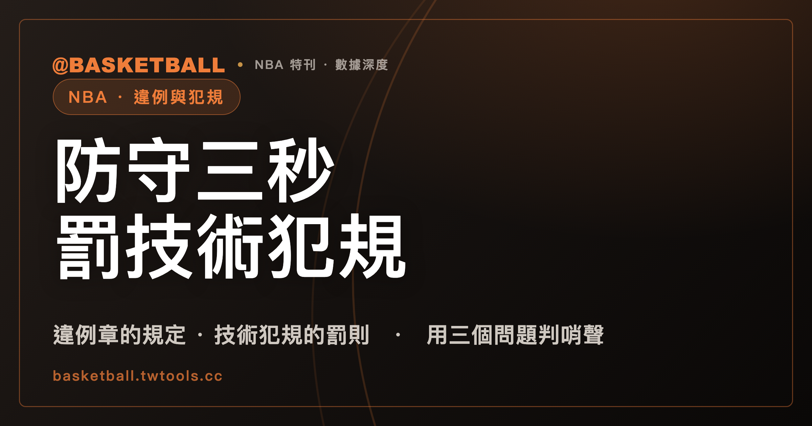

NBA 防守三秒列在違例章，罰則卻是技術犯規：違例和犯規差在哪
違例（violation）與犯規（foul）都是裁判的哨聲，但被破壞的東西不同：違例破壞動作或時間規則，預設處理是換球權；犯規是非法接觸或不當行為，會登記在球員身上，並可能送對手罰球。NBA 2025-26 規則書把防守三秒放在違例章，罰則卻是技術犯規，所以判斷要看具體條文，不能憑哨聲聽起來重不重。

新手村｜規則入門・違例與犯規
NBA 2025-26 規則書有一章叫 Rule 10，標題是「違例與罰則」（Violations and Penalties）。防守三秒（defensive three-second）就寫在這一章裡。可是這條規定的罰則，不是把球交給對方，而是判防守方一次技術犯規（technical foul），進攻方保有球權。
違例章裡的規定，罰則卻是犯規。所以「違例輕、犯規重」這種直覺，拿來分辨哨聲會出錯。下面先看兩者預設的差別，再回頭看防守三秒這種跨界的條文，接著用三個問題自己判一次。
走步、二次運球與 24 秒：違例破壞動作和時間，預設結果是換球權
先看典型的違例。NBA 2025-26 規則書 Rule 10 規定，球員不得不運球就帶球跑；球員自願結束第一次運球之後，也不得再運球。第二條有例外，例如投籃失控、被對手觸球等情形，所以不是每次連續運球都算違例。這兩種違例的罰則寫作「失去球權」：球權給對方，在離違例地點就近的邊線發球，但位置不得比罰球線延伸更靠近底線。
走步（Traveling）的定義也寫在規則書裡。NBA 2025-26 規則書把它定義為持球時朝任何方向移動，超過規定的範圍。FIBA 2024 規則的說法相近：持著活球在場上時，一腳或雙腳的非法移動超過該條規定的範圍。
24 秒也是違例，但它不在 Rule 10。NBA 2025-26 規則書把它放在 Rule 7，規定持球隊必須在 24 秒內出手。時間內沒有出手，就會被判 shot clock violation，球權給對方，在就近的邊線發球，位置同樣不得比罰球線延伸更靠近底線。這是一般規定，同一節另有各種例外，例如死球時鐘為 0 的情形。FIBA 2024 規則同樣要求球隊在 24 秒內出手。
踢球要看是不是故意。NBA 2025-26 規則書規定，用腳或腿的任何部位踢球或擊球，只有在故意的時候才是違例。進攻方踢球的罰則，也是球權給對方。
| 違例 | 破壞的是什麼 | 預設處理 |
|---|---|---|
| 不運球就帶球跑（NBA 2025-26，Rule 10） | 動作 | 失去球權，球權給對方，就近邊線發球 |
| 二次運球（NBA 2025-26，Rule 10；例外見上文） | 動作 | 失去球權，球權給對方，就近邊線發球 |
| 24 秒（NBA 2025-26，Rule 7；一般規定） | 時間 | 球權給對方，就近邊線發球 |
| 故意踢球，進攻方所為（NBA 2025-26，Rule 10） | 動作 | 球權給對方，就近邊線發球 |
| 違例的一般罰則（FIBA 2024，Article 22） | 規則被破壞 | 對手在離違例地點就近處擲球入界，除非規則另有規定 |
FIBA 2024 規則對違例的定義只有一句：違例是對規則的違反（an infraction of the rules）。它的一般罰則是把球權給對手擲球入界，但原文接著寫了「除非規則另有規定」。這句限定，後面會用到。
犯規記在人身上：個人犯規登記給犯規者，防守方造成的另記進全隊
犯規處理的是另一類事：對手之間的接觸與行為。NBA 2025-26 規則書 Rule 12B 規定，球員不得抓住、推、撞，也不得伸出手、手臂、腿或膝蓋，或把身體彎成不正常的姿勢，來妨礙對手的前進。
一般個人犯規的定義是：球成為活球之後、節結束的哨聲響起之前，與對手發生的非法身體接觸。時間到之後的犯規一般不計，投籃者是例外。
登記方式和違例不同。NBA 2025-26 規則書規定，個人犯規記在犯規者身上；如果非法接觸是防守方造成的，球隊另外記一次全隊犯規。全隊犯規也有明文的例外，例如雙方各有一人個人犯規時，不記全隊犯規。
FIBA 2024 規則的寫法更完整。犯規是違反規則的行為，內容是與對手的非法個人接觸，或不當的運動行為（unsportsmanlike behaviour）。無論罰則是什麼，每一個犯規都要登記在犯規者名下。個人犯規則是球員與對手的非法接觸，不論球是活球或死球。
假設防守球員 A 在球成為活球之後，用手臂推開運球的進攻球員 B。依 NBA 2025-26 規則書，這是 A 的個人犯規，A 的名下多一次，A 的球隊另記一次全隊犯規。比賽結束後，個人犯規會出現在 box score 的 PF 欄，讀法見怎麼讀 box score。擋人者站定之後又朝對手移動、造成非法接觸，也可能被判擋人犯規，條件見擋拆是什麼那一篇。
犯規不等於罰球：要看投籃動作與全隊犯規累計
犯規不會自動變成罰球。兩份規則書都把罰球寫成有條件的。
| 情況 | 結果 | 聯盟與版本 |
|---|---|---|
| 防守方個人犯規，進攻球員在投籃動作中，投籃未進 | 罰兩球或三球，兩個條件缺一不可 | NBA 2025-26 |
| 防守方個人犯規，該隊尚未進入罰球狀態 | 邊線發球，位置不得比罰球線延伸更靠近底線 | NBA 2025-26 |
| 每節每隊四次全隊犯規以內 | 沒有額外罰則 | NBA 2025-26，一般節數；加時為三次 |
| 超過四次的一般犯規，且記為全隊犯規 | 一次罰球，外加一次懲罰罰球（penalty free throw） | NBA 2025-26 |
| 非投籃動作中被犯規 | 由未犯規方擲球入界；若犯規方已進入全隊犯規罰球狀態，改依 Article 41 | FIBA 2024 |
| 投籃者被犯規，出手自 2 分區，投籃未進 | 罰兩球 | FIBA 2024 |
| 一節內已犯滿 4 次全隊犯規，之後非投籃動作中的個人犯規 | 罰兩球，不再擲球入界 | FIBA 2024 |
NBA 2025-26 規則書的邏輯，可以用一個假設數字讀一次。假設某隊本節已經累計四次全隊犯規，第五次一般犯規發生時，被犯規的進攻球員不在投籃動作中。這時該隊已經超過四次，NBA 2025-26 規則書的處理是一次罰球，外加一次懲罰罰球。如果該隊本節只累計到三次，這次犯規讓它達到四次，仍在四次以內，處理是邊線發球。
FIBA 2024 規則對全隊犯規的定義更寬：球員的個人、技術、違反運動精神或取消資格犯規，都算全隊犯規。一節內累計四次之後，該隊就進入全隊犯規罰球狀態。
兩種哨聲，裁判要報的內容不同；同時發生時，NBA 判犯規優先
從裁判的動作，也能分辨哨聲的種類。NBA 2025-26 規則書 Rule 2 規定，發生違例時，裁判要用正確的手勢表明違例的性質，並說出違例者的號碼（如適用）與球權推進的方向。發生個人犯規時，裁判則要向記錄台（official scorer）報告犯規者的號碼、犯規的種類，以及要罰的球數（如有）或擲球入界的地點。
違例的通報交代「什麼規則被破壞、球往哪走」，個人犯規的通報交代「誰犯的、犯了什麼、怎麼罰」。看轉播時，可以留意裁判有沒有向記錄台報號碼與罰球數：規則書要求個人犯規這樣報，違例的號碼則是「如適用」才報。
兩種情況同時發生時怎麼辦？NBA 2025-26 規則書寫得很直接：違例與犯規同時發生，犯規優先。假設進攻球員在走步的那一瞬間，被防守者推了一下。依規則書的字面，優先處理的是犯規。FIBA 2024 規則如何處理同時發生的情形，不在這篇的範圍內。
防守三秒與延誤比賽：哨聲的名稱和罰則對不上
現在回到開頭那件怪事。NBA 2025-26 規則書 Rule 10 第七節是防守三秒。這一節的罰則寫得很清楚：判一次技術犯規，進攻方保有球權，在離中斷地點就近的邊線、罰球線延伸處發球。
Rule 12A 也把它列進技術犯規的項目，和延誤比賽（delay of game）、coaches box violations、flopping 等排在一起。
延誤比賽的處理更有意思。NBA 2025-26 規則書規定，第一次只是警告，之後每一次都記一次技術犯規，並記在球隊。Rule 12A 的罰則段落，自己把這類項目稱為 violations。
這也不奇怪，因為規則書對技術犯規的定義本來就包含兩類：球員與板凳成員的不當行為，或違例。NBA 2025-26 規則書規定，一次技術犯規給一次罰球。同一本規則書也規定，活球時的身體接觸不能吹技術犯規，打架，以及帶有身體接觸的挑釁除外。所以技術犯規不能簡單看成一種接觸犯規。
FIBA 2024 規則也留了口子。Article 22 的違例一般罰則，是對手擲球入界，但寫了「除非規則另有規定」。FIBA 2024 規則的技術犯規，則定義為球員不涉及接觸、屬於行為性質的犯規（a player non-contact foul of a behavioural nature）。球員的技術犯規，記為球員犯規，並計入全隊犯規，對手獲得一次罰球。
往支持的方向看，這是兩處互相對得上的條文：Rule 10 說防守三秒的罰則是技術犯規，Rule 12A 又把它列進技術犯規。往限制的方向看，這一節的例子只有防守三秒與延誤比賽兩處。其他違例的罰則，要各條各看。
個人犯規離場：NBA 是第六次，FIBA 是第五次
兩個聯盟的數字不同，混在一起會讀錯。
| 項目 | NBA 2025-26 規則書 | FIBA 2024 規則 |
|---|---|---|
| 個人犯規離場 | 第六次個人犯規時失格 | 累計 5 次犯規，必須立刻離場 |
| 每節全隊犯規 | 四次以內沒有額外罰則；加時為三次 | 每節四次之後，進入罰球狀態 |
| 技術犯規的罰球 | 一次技術犯規給一次罰球 | 對手獲得一次罰球 |
FIBA 2024 規則裡，球員的技術犯規記為球員犯規，所以也計入球員的離場次數與全隊犯規。這個計入方式，不能直接套在 NBA 上。NBA 技術犯規如何計入全隊犯規，不在這篇的範圍內。
聽到哨聲時，怎麼判違例或犯規？
把上面整理成三個問題，依序問：
- 有沒有非法接觸，或不當的行為？有，就走犯規這條路：登記在誰身上，再看罰球條件。
- 沒有的話，是動作或時間規則被破壞嗎？是，預設處理是換球權，再看具體條文的罰則。
- 條文有沒有另外規定？防守三秒、延誤比賽、技術犯規這類條文，會讓違例和犯規交疊，罰則要查那一條。
用三個假設的例子練習：
- 假設進攻球員接球後沒有運球，就帶著球跑。依 NBA 2025-26 規則書 Rule 10，這是違例，球權給對方，就近邊線發球。
- 假設防守球員在球成為活球之後，用手臂推開投籃中的進攻球員，投籃沒進。依 NBA 2025-26 規則書，這是個人犯規，記在防守球員身上，球隊另記一次全隊犯規，並罰兩球或三球。
- 假設 NBA 比賽中，防守方被吹防守三秒。依 NBA 2025-26 規則書，判一次技術犯規，罰一次球，進攻方保有球權。
想找比賽練習，可以先看NBA 完全指南認識聯盟與球隊，再挑一場比賽，專門聽哨聲、看裁判的手勢與報號碼的動作。以上規則以 NBA 2025-26 規則書與 FIBA 2024 規則為準；之後的版本，請看官方公布的內容。
常見問題
違例和犯規差在哪裡？
依 NBA 2025-26 規則書與 FIBA 2024 規則，違例破壞的是動作或時間規則，預設處理是換球權，例如走步、二次運球、24 秒；FIBA 2024 的一般罰則寫的是對手擲球入界，但附了「除非規則另有規定」。犯規則是非法接觸或不當行為，NBA 2025-26 的個人犯規記在犯規者身上，FIBA 2024 的每個犯規都登記在犯規者名下。NBA 2025-26 的防守三秒列在違例章、罰則卻是技術犯規，所以要看具體條文。
違例會罰球嗎？
要看條文。NBA 2025-26 規則書中，不運球帶球跑、二次運球、24 秒、進攻方的故意踢球，罰則是球權給對方，各有例外。NBA 2025-26 的防守三秒，罰則是一次技術犯規，罰一次球，進攻方保有球權。FIBA 2024 規則對違例的一般罰則是對手擲球入界，但寫了「除非規則另有規定」；FIBA 24 秒的專屬罰則不在這篇的範圍內。
犯規之後會罰球嗎？
要看條件，不是每次都罰。依 NBA 2025-26 規則書，防守方個人犯規且進攻球員在投籃動作中投籃未進，才罰兩球或三球；防守方個人犯規且該隊未進入罰球狀態，則是邊線發球。每節每隊四次全隊犯規以內沒有額外罰則，超過四次的一般全隊犯規，處理是一次罰球外加一次懲罰罰球，加時是超過三次。依 FIBA 2024 規則，非投籃動作中被犯規，原則上由未犯規方擲球入界，除非犯規方已進入一節四次的全隊犯規罰球狀態。
NBA 和 FIBA 的個人犯規離場次數一樣嗎？
不一樣。NBA 2025-26 規則書規定，球員第六次個人犯規時失格。FIBA 2024 規則規定，球員累計 5 次犯規就必須立刻離場，其中球員的技術犯規也記為球員犯規。兩個數字不能混用，看不同聯盟的比賽時，要先確認適用的規則書。
資料來源
- NBA Official Playing Rules（2025-26 賽季規則書）：Rule 2（裁判通報、違例與犯規同時發生）、Rule 3（球員失格）、Rule 4（定義）、Rule 7（24 秒）、Rule 10（違例與罰則）、Rule 12A（技術犯規）、Rule 12B（個人犯規）。ak-static.cms.nba.com/Official-2025-26-NBA-P…
- FIBA Official Basketball Rules 2024（2024 年 10 月版）：Article 22（違例）、24（運球）、25（走步）、29（24 秒）、32、34（犯規與個人犯規）、36（技術犯規）、40（球員的 5 次犯規）、41（全隊犯規）。assets.fiba.basketball/documents-corporate-fi…
- 走步、二次運球、防守三秒、全隊犯規等中文說法，是球迷與教練之間的通用譯法，並非規則書用語。